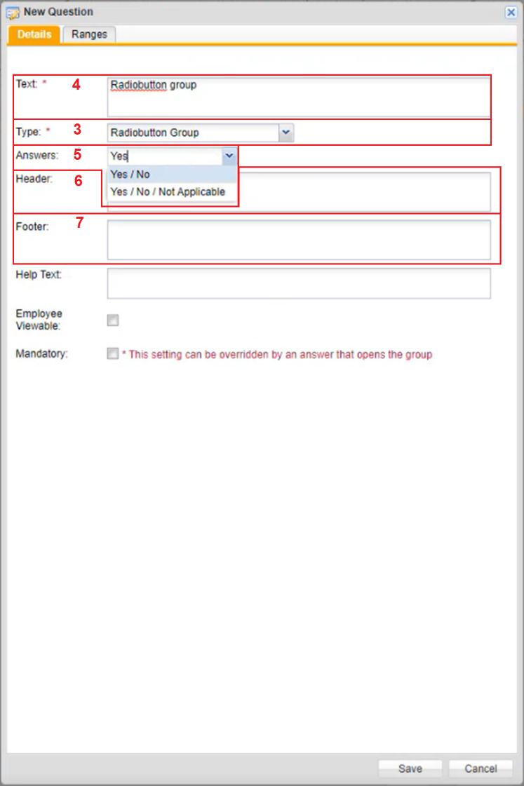
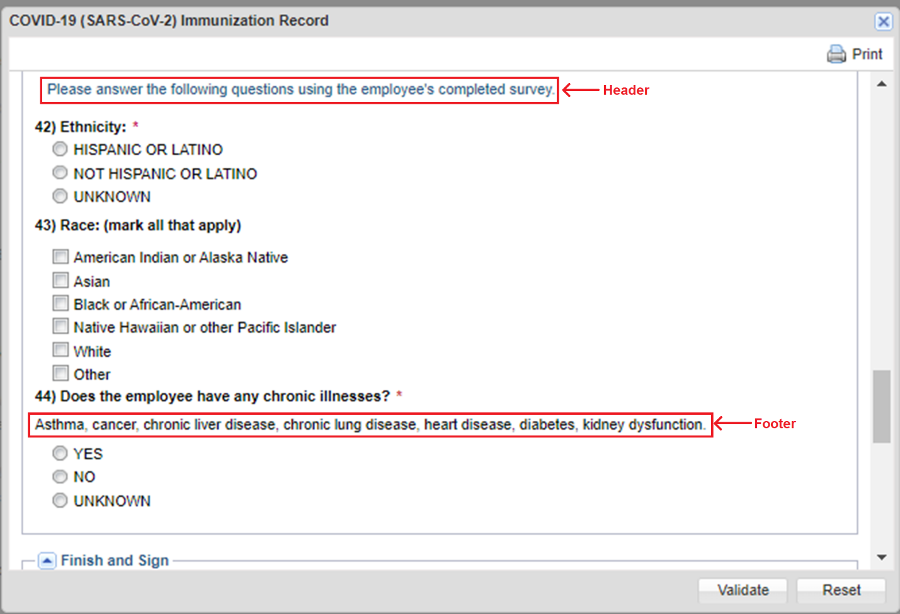
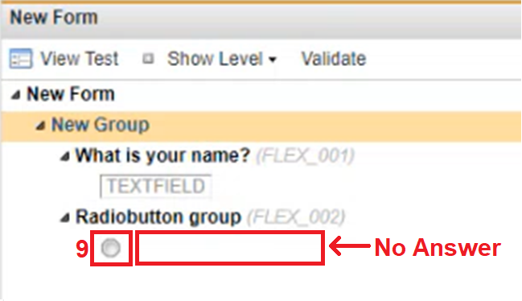
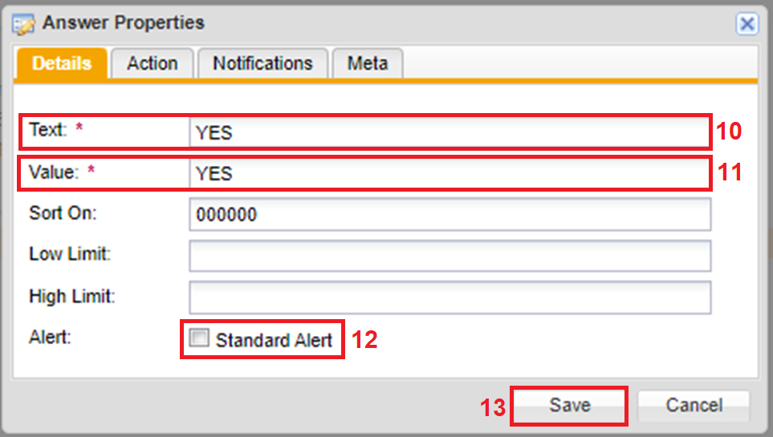
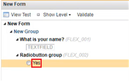
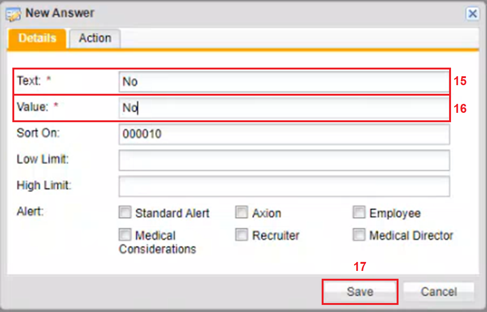

Adding a Radio button Group Question to a Charting Form
Radio button questions can be used for questions where there can only be one answer selected.
To Add a Radio button Group question to a Charting From
Right click a Group created under the New Form.
A Menu appears.
Click New Question.
Another menu to the left appears.
Click Radio button Group.
The New Question window appears.

The Type field is automatically filled in as Radio button Group.
In the Text textbox, type in a question.
The Answers dropdown text has default Answer options Yes/No, and Yes/No/Not Applicable.
You can type in an Answer if you want to add an answer.
In the Header textbox, type in instructions that you want to show prior to a question.
In the Footer textbox, type in what you want to show after a question.
Below an example of where the header would show and where the footer would show on the form itself is shown.

Click Save.
The New Question window closes. Under the Radio button group question a radio button displays with no answers beside it.

Double click the Radio button.
The Answer Properties window appears.

In the Text textbox type in a response that you want displayed for the radiobutton.
In the Value textbox type in the same response that was typed in the Text textbox.
The Text textbox and the Value textbox must have the same value, the text in the text textbox is what we see, the text in the value textbox is what shows up as the result.
In the Alert section, you can click the Standard Alert checkbox if you want the answer to populate in the Alerts section in the Home page.
To view the Standard Alert, you can click on EHS Manager tab and click on Alerts in the sub menu. This should only be used if you want the responses to have set parameters that will then add an Alert notice in your Alerts Tab based on how the question is answered.
Click Save.
The answer now displays to the right of the radio button.

To add another answer, double click the radio button group question.
The New Answer window opens.

Type the new response you want to add in the Text textbox.
Type in the same value in the Value textbox.
Click Save.
Two responses now show under the Radio button group question.